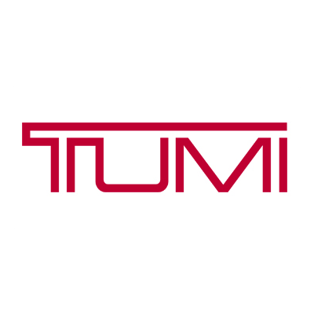

투미 TUMI
투미(TUMI)는 1975년 찰리 클리퍼드가 미국에서 설립한 프리미엄 여행가방·비즈니스 백 브랜드다. 내구성 높은 발리스틱 나일론 소재로 알려졌으며, 2016년 쌤소나이트가 인수했다.
최종 업데이트

투미는 어떤 브랜드인가
투미(TUMI)는 1975년 찰리 클리퍼드가 미국에서 설립한 프리미엄 여행가방·비즈니스 백 브랜드다. 내구성 높은 발리스틱 나일론 소재로 알려졌으며, 2016년 쌤소나이트가 인수했다.
투미는 어떻게 봐야 할까
투미는 발리스틱 나일론 내구성과 정교한 수납 설계로 비즈니스 트래블 프리미엄 시장을 대표한다. 헤리티지, 핵심 제품, 모회사 구조를 함께 보면 패션·럭셔리 안에서의 위치가 또렷해진다.
투미는 어떻게 시작되고 성장했나
투미는 1975년 찰리 클리퍼드(Charlie Clifford)가 설립한 미국의 프리미엄 가방브랜드로, 여행 컬렉션부터 백팩, 브리프케이스, 액세서리까지 다양한 제품들을 선보여왔다. 약 40년의 역사 동안 끊임없이 신기술을 개발하며 가방의 형태, 재질, 수납공간 등에 대한 기존 시장의 고정관념을 무너뜨리는 혁신적인 브랜드로 자리매김했다.
투미의 브랜드 아이덴티티는 무엇인가
투미는 합리적인 스마트 럭셔리 브랜드를 표방한다. 이를 위해, '투미 디퍼런스(TUMI Difference)'라는 원칙에 따라 뛰어난 제품과 서비스를 제공하고 있다.
그 결과, 투미는 성공과 신뢰의 상징으로 자리매김하며, 세계 유명인사들에게 사랑받는 브랜드가 되었다.
투미의 대표 제품과 서비스는 무엇인가
캐리어·백팩·브리프케이스·트래블 액세서리를 전개한다. Alpha 비즈니스 라인과 경량 Voyageur 등이 대표적이다.
투미는 누가 만들고 이끌었나
창업자는 찰리 클리퍼드(Charlie Clifford)다. 브랜드명은 그가 평화봉사단으로 머문 페루의 의식용 칼 'tumi'에서 따왔다.
투미는 지금 어떤 상태인가
더 알아둘 것
미국 뉴저지 에디슨에 본사를 두며 2016년 쌤소나이트가 인수했다.
투미 연혁 — 주요 사건은 언제였나
투미 로고는 어떻게 변해왔나
대표 로고대표 브랜드 마크
대표 로고 1보관 이미지 1자주 묻는 질문
투미는 어느 나라 브랜드인가요?
투미는 미국의 패션·럭셔리 브랜드입니다.
투미는 언제 설립되었나요?
투미는 1975년 설립되었습니다.
투미의 브랜드 아이덴티티는 무엇인가요?
투미는 합리적인 스마트 럭셔리 브랜드를 표방한다.
투미의 대표 제품은 무엇인가요?
캐리어·백팩·브리프케이스·트래블 액세서리를 전개한다.
투미는 현재 어떤 상태인가요?
국가: 미국; 본사: 에디슨(Edison), 뉴저지; 산업: 패션·럭셔리
투미의 본사는 어디에 있나요?
투미의 본사는 South Plainfield에 있습니다(위키데이터 기준).
투미의 모기업은 어디인가요?
투미의 모기업은 샘소나이트입니다(위키데이터 기준).
출처와 검증
투미 관련 참고: 공식 웹사이트 · 위키데이터 Q4465402 · 영어 위키백과. 브랜드명은 한글과 원어를 함께 표기하되 데이터에 없는 표기는 만들지 않습니다. 기원 국가·설립연도는 검수된 정의문에서 확인된 값을 우선하고, 없을 때만 공식 웹사이트 URL이 일치하는 위키데이터 개체의 값을 씁니다. 위키데이터 값은 2026-09-07 기준입니다.